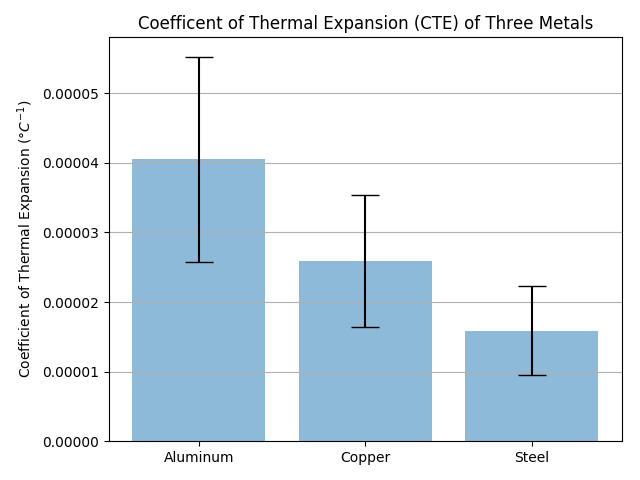
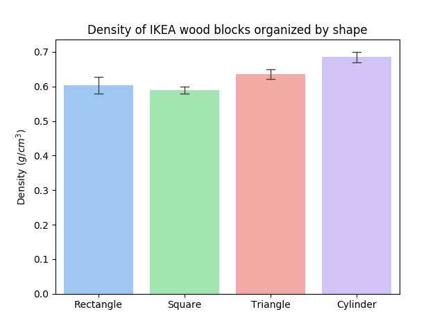

Error bars are useful in engineering to show the confidence or precision in a set of measurements or calculated values. Bar charts without error bars give the illusion that a measured or calculated value is known to a high precision. In this post we will build four different statistical plots with Python, matplotlib and seaborn.
The finished compilation of the charts is shown below. The bar graph is on the top followed by the historgram, box plot and violin plot.

To build these plots, we will use the dataset below. The data is in a .csv file and has three columns. The data represents the density of four different shaped blocks from Ikea. The idea is to see if the density of each shape is different. If the density of each shape is different, one possible theory is that the shapes are made of different types of wood. We will use the statistics plots to help us visualize the problem. Each shape has about 100 density measurements. The first column is for rectangles, the second column is for squares the third column is triagles and the fourth column is squares. All of the density measurements are in units of \(g/cm^3\). The .csv file looks something like below:
| Rectangle | Square | Triangle | Cylinder |
|---|---|---|---|
| 4.5 | 5.7 | 5.7 | 5.6 |
| 4.5 | 5.7 | 5.7 | 5.6 |
| 4.5 | 5.7 | 5.7 | 5.6 |
| 4.5 | 5.7 | 5.7 | 5.6 |
| 4.5 | 5.7 | 5.7 | 5.6 |
| 4.5 | 5.7 | 5.7 | 5.6 |
Setting up the virtual environment and installing packages
In order to build our first plot, we need to fire up a new virtual environment with numpy, pandas and matplotlib installed.
To get going, we'll use the conda prompt to create a new virtual environment. Select Anaconda Prompt from the windows start menu.
The install the modules using conda install. I like using the Anaconda distribution of Python because it makes creating and managing virtual environments easy on the three major computing platforms

(C:\Users\peter.kazarinoff\AppData\Local\Continuum\Anaconda3) C:\Users\peter.kazarinoff>conda create -n plotenv
Then to activate our new virtual environment, type the following into the conda prompt
(C:\Users\peter.kazarinoff\AppData\Local\Continuum\Anaconda3) C:\Users\peter.kazarinoff>activate errorbars
(plotenv) C:\Users\peter.kazarinoff>
Now we install the packages we need to build the plots. I'm using conda to do this, but pip would work as well. If you are using Mac OSX, using conda to create your virtual environment means that you can view matplotlib plots by running your script from the command line with (plotenv)$ pythonw bar_plot.py
(errorbars) C:\Users\peter.kazarinoff>conda install matplotlib
(errorbars) C:\Users\peter.kazarinoff>conda install pandas
(errorbars) C:\Users\peter.kazarinoff>conda install seaborn
Make sure that our (errorbars) virtual environment has matplotlib, pandas and seaborn installed:
(errorbars) C:\Users\peter.kazarinoff> conda list
pandas
matplotlib
seaborn
With the virtual environment set up and the packages installed, we can move on to our first plot.
Bar Chart with Error Bars
The first plot we will create is a bar chart with error bars. Open a new Python script called bar_plot.py. At the top of the script we need to import pandas matplotlib and seaborn.

We'll use pandas to read in the data from the .csv file, seaborn to build the plot and matplot lib to display it.
#bar_plot.py
import pandas as pd
import matplotlib.pyplot as plt
import seaborn as sns
Next we need to read in our data. We will use pandas to do this, specifically the pd.read_csv() function. It is common practice to import pandas as pd. With that as our import line, we only need to call pd before pandas methods and functions. df is a common variable name to give a pandas dataframe.
a dada frame?

The pandas dataframe is a python object that is a little like a microsoft excel file. Data frames have columns and rows and is the perfect object type to store our data in from our .csv file.
# Read in the data
df = pd.read_csv('data.csv', header =0)
Now it's time to build our plot. We are going to build a bar chart with four different bars, one bar for each shape: Rectangles, Squares, Triangles and cylinders. I'm going to use seaborn to build the plot. seaborn produces great looking statistical plots and has builtin support for pandas dataframes. The We are going to put labels on the x-axis that shows each material name and a label on the y-axis that shows the title "Coefficient of thermal expansion (/degree C)". We can save the figure to a file called bar_plot_with_error_bars.png using matplotlib's plt.savefig() function.
ax = sns.barplot(data=df)
It looks pretty good, but I like to have caps on the error bars.
ax = sns.barplot(data=df, errwidth=1, capsize=0.1)
Now add an axis label and title. Our y-axis is density in \(g/cm^3\). To do this we'll modify the ax object axis labels with ax.set_ylabel() and ax.set_title. seaborn creates a matplotlib axis object when we called the sns.barplot() function. That means we can use any of the methods you can call on a regular matplotlib axis object.
ax.set_ylabel('Density ($g/cm^3$)')
ax.set_title('Density of IKEA wood blocks organized by shape')
The final plot looks like this:

The full script is shown below:
import pandas as pd
import matplotlib.pyplot as plt
import seaborn as sns
df = pd.read_csv('data.csv')
ax = sns.barplot(data=df, palette="pastel", errwidth=1, capsize=0.1)
ax.set_ylabel('Density ($g/cm^3$)')
ax.set_title('Density of IKEA wood blocks organized by shape')
plt.show()